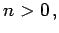
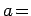
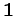
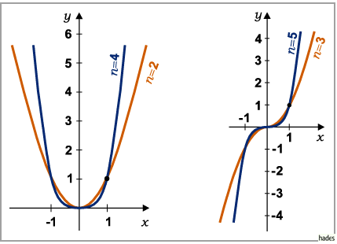
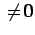
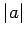

Parabel n-ter Ordnung
Die Funktion
mit  ganzzahlig, liefert als Kurve eine Parabel n-ter Ordnung.
- Spezialfall :
- Die Kurve y = xn geht durch die Punkte (0,0) und (1,1) und berührt oder schneidet die x-Achse im Koordinatenursprung. Für gerades n ergibt sich eine zur y-Achse symmetrische Kurve mit einem Minimum im Koordinatenursprung. Für ungerades n ergibt sich eine zentralsymmetrische Kurve zum Koordinatenursprung, der zugleich Wendepunkt ist. Asymptoten gibt es keine.

- Allgemeiner Fall a:
- Man erhält die Kurve y = axn aus der zu y = xn gehörenden Kurve durch Streckung der Abszissen mit dem Faktor . Für a < 0 spiegelt man y = |a|xn an der x-Achse.